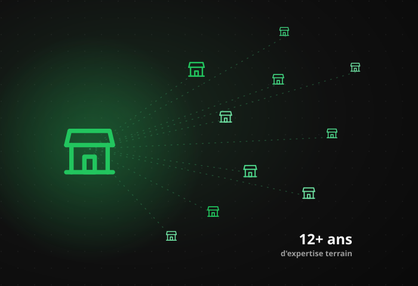

Ils m'ont fait confiance


Ce qu'on fait concrètement, comment ça se déroule, et pourquoi ça marche — avant de vous engager sur quoi que ce soit.
Trois blocages qu'on retrouve dans la quasi-totalité des restaurants qu'on audite. Reconnaissez-vous votre établissement ?
Vos prix montent, vos couverts baissent. Le CA tient sur le papier — la rentabilité, elle, recule.
2 points de food cost qui dérivent, 3% de masse salariale en plus : la marge s'évapore sans que vous le voyiez venir.
Ce n'est plus le manque de clients qui freine votre croissance. C'est l'impossibilité de recruter et garder une équipe stable.
Pas de rapport théorique. Une méthode de terrain, appliquée directement à votre établissement.
On dissèque votre carte, votre food cost, votre masse salariale et votre trafic sur le terrain — pas depuis un tableur envoyé par mail. Pendant l'audit, on passe du temps dans votre établissement, on observe un vrai service, on discute avec votre équipe. L'objectif : identifier les 1 à 3 priorités qui comptent vraiment, pas 50 recommandations théoriques. Vous repartez avec un diagnostic chiffré, pas une impression générale.
Pas de stratégie sur 40 pages que personne n'a le temps d'appliquer. Vision à 12 mois, grands chantiers à 4 mois, priorités du mois, et chaque semaine 2 à 3 actions concrètes — pensées pour tenir dans le quotidien d'un restaurateur qui gère déjà son service, son équipe et ses fournisseurs. Vous savez toujours ce qu'il faut faire aujourd'hui, et pourquoi.
KPI du moment, actions réalisées ou non, blocages, décisions, priorités de la semaine suivante — en direct avec votre coach. Un espace client garde la trace de chaque tâche et de chaque échange, pour ne jamais perdre le fil d'une semaine à l'autre. L'accompagnement ne s'arrête pas après le diagnostic initial : il continue tant que vous avancez, avec quelqu'un qui connaît votre dossier et vos chiffres.

Hissam Bouhiza n'a pas appris ce métier dans un livre. Du Mans à Bordeaux, il est dans la restauration depuis l'âge de 14 ans — jusqu'à devenir aujourd'hui consultant en croissance et créateur de concepts food.
Depuis plus de 12 ans, il accompagne des enseignes comme Streat Burger, Pitaya, Crousty Game, La Kazdalerie, Dangerous Burger, My Khao, KFB Burger, Chamas Tacos et de nombreux concepts indépendants — sur le développement, le branding et la rentabilité. RestUp, c'est cette expertise mise directement au service de votre restaurant.
Soit, à partir de moins de 35€/jour — l'expertise de 12 ans passés à faire grandir des marques de restauration, appliquée directement au vôtre.
On analyse votre activité en profondeur pour identifier les vrais leviers de croissance.
Un plan d'action adapté à votre établissement, vos objectifs et votre marché.
Des actions claires, testées et approuvées, pour des résultats rapides et durables.
Un accompagnement humain et régulier pour avancer ensemble sereinement.
Un nombre restreint de restaurateurs accompagnés chaque mois, sélectionnés sur audit — pas un accompagnement à la chaîne.
Candidater à l'accompagnement →Pas de rapport de 40 pages. Un audit direct avec celui qui a fait le chemin, un plan d'action concret, dès la première semaine.
Candidater pour un audit stratégique